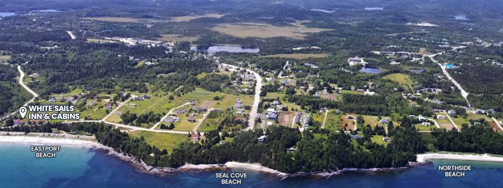
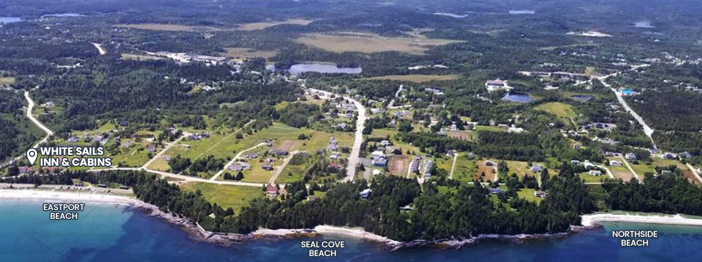
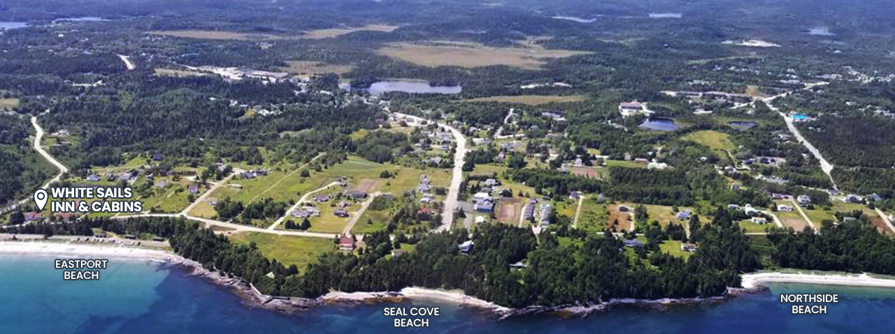
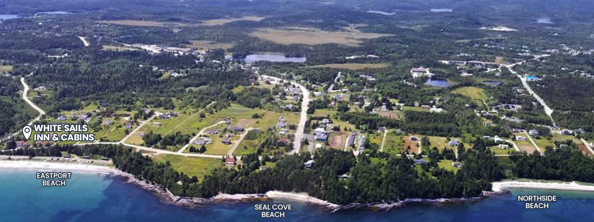

Beaches
 



One of the most loved beaches in the area, Eastport Beach has fine white sand and shallow waters that is perfect for visitors and their families. This beach is at the White Sails Inn’s doorstep. Eastport Beach is also the start of the High Tide Trail. Eastport Beach has ample parking, wheelchair accessibility (with mobility mats on the beach), change rooms, washrooms, showers and cook houses.

A small sandy beach on the High Tide Trail, just minutes from the White Sails Inn. This is a secluded area tucked in between the busier Eastport and Northside Beaches. Just a 5 minute walk from Eastport Beach.
Another popular beach and part of the High Tide Trail, Northside Beach is also accessible by car with ample parking. A beautiful white sandy beach that is often quieter, popular for walking and beachcombing (Nancy’s favourite!). The Beach has ample parking, wheelchair accessibility (with mobility mats on the beach), a toilet facility and a cook house.

Roughly a 3-minute drive from the White Sails Inn, this is another popular area beach. Sandy Cove Beach is also part of the Damnable Trail system, accessing the Sandy Cove Lookout Trail and the Coastal Ridge Trail to Salvage. There is parking and a toilet facility.
This park is located at Sandy Cove Pond (a 3-minute drive from the White Sails Inn). The park offers a picnic area, playground and fresh water swimming (ideal for all ages because of the shallow water). Also, this pond is ideal for kayaking or paddle boards. A beautiful, 2½ km walking trail surrounds the pond. There is ample parking, toilet facilities, change rooms, cook house and a wharf.

At our doorstep, the High Tide Trail connects three beaches (Eastport, Seal Cove and Northside). This trail is the Eastport section of the Damnable Trail system, measuring 2½ kms in length one-way and meandering around an amazing shoreline. Visitors can see a vibrant sea environment with tide pools and wildlife such as otters, mink, seals, and sea birds of many types (including eagles and osprey hawks).
Another section of the Damnable Trail system, the Old Schoolhouse Trail is a new addition and connects the towns of Happy Adventure and Sandy Cove. A trail through ancient boreal forest and connecting to beautiful shoreline vistas and Sandy Cove Beach, this trail measures about 2 kms in length, but then connects to other trails that can take visitors as far as the Town of Salvage on the Coastal Ridge Trail. The Old Schoolhouse Trail has many sitting areas and the views are truly spectacular. This trail is a 2-3 minute drive from the White Sails Inn property.
The Eastport peninsula is the home of the Damnable Trail system, a hiker’s paradise with trails suitable for all levels. With the High Tide Trail at our doorstep, several other trails within a 2-3 minute drive, and the Salvage trails within a 10-minute drive, the White Sails Inn and Cabins is in the centre of it all.
The Town of Salvage is one of the oldest communities in Bonavista Bay. With a rich fishing heritage dating back hundreds of years, most settlers to the Eastport peninsula first lived and worked in this community. To this day, Salvage is still a fishing community for a few, but the town comprises mostly retired residents and summer home-owners. Salvage is a 10-minute drive from the White Sails Inn. There is a Fisherman’s Museum in the town that covers the history quite well, and there are the various Damnable Trails to explore.
A historic Newfoundland outport built on rock with gorgeous ocean views, red fishing stages and coastal trails steeped in history. It is a “must” when visiting the peninsula.


Festivals/Performances at the Beaches Arts and Heritage Centre
(7 minute walk):


Several Salmon Fishing Areas
Town of Gander
Town of Clarenville
Bonavista Peninsula
(Bonavista, Elliston, Trinity, Port Rexton, Port Union)
Twillingate
The Loop
(Greenspond, New Wes Valley, Newtown, Lumsden, Cape Freels)